2021-2022
Pasukan inti paskibra MTsN 42 yang terdiri dari angkatan 12 dan 13
Suci Nuraini Dama yanti
Ketua
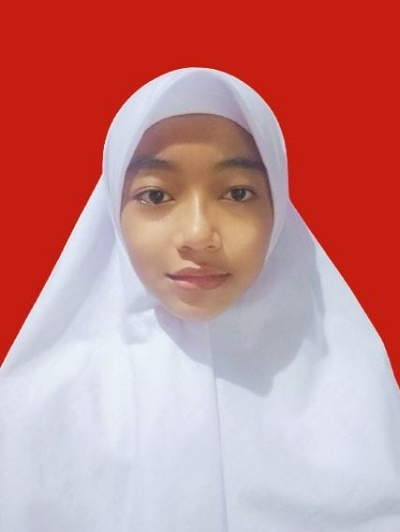
Khansabella Nameera Agustin
Wakil Ketua
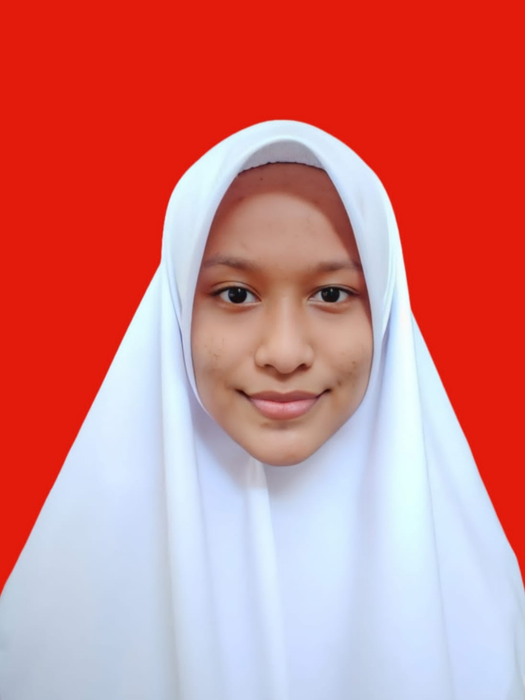
Hasyifa Zahwa
Sekretaris
Anisa Habibah Rabbani
Bendahara 1
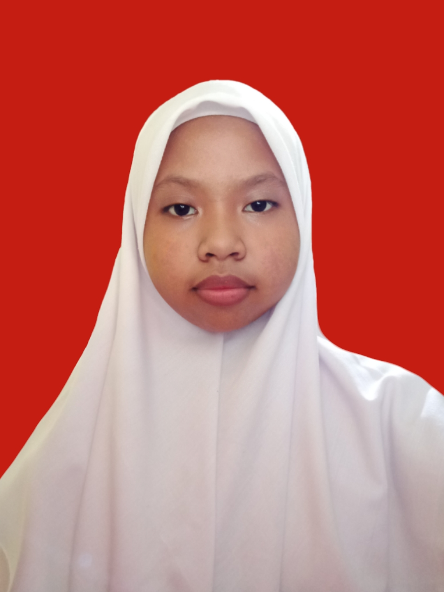
Nazya Julisnaini
Bendahara 2
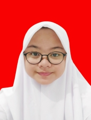
Syafa Maulida Zai Azzahra
Ketua Satuan Lapangan
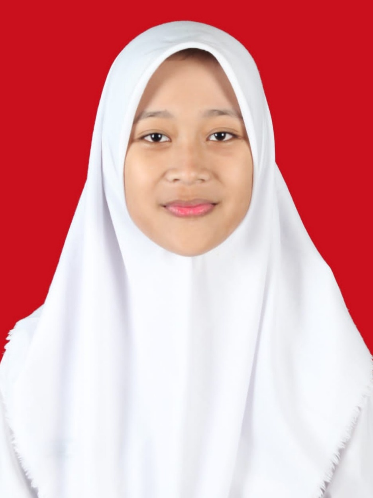
Elsa Kania Wijanarko
Ass.Ketua Satuan Lapangan
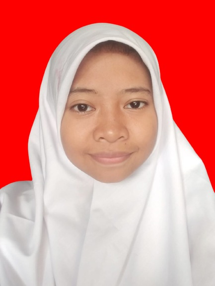
Hikmatul laila
Ketua Satuan Pengawas
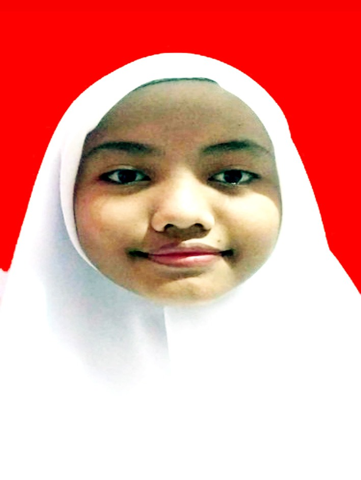
Nur Khoiratul Alfiyah
Ass.Ketua Satuan Pengawask
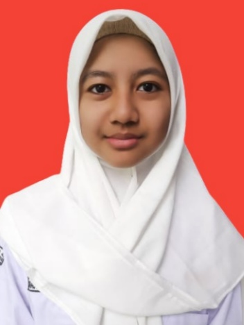
Shafana Sharliz Putri
Ketua Satuan Koordinasi
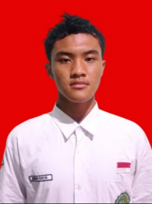
Ananda Rasya Islamia Pasha
Ass.Ketua Satuan Koordinasi 1
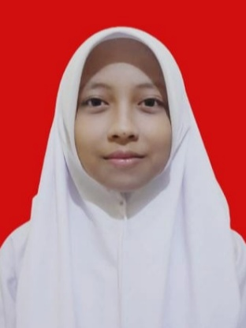
Ghina Azkia Sauri
Ass. Ketua Satuan Koordinasi 2
Nanda Zalfa Aufani
Ketua Satuan Kesehatan
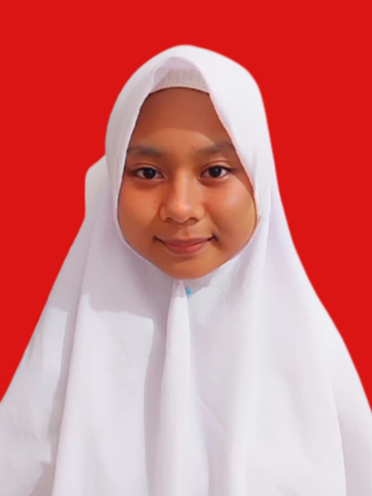
Az Zahra Adya Wirawibowo
Ass.Ketua Satuan Kesehatan
Nurul Azakiya
Ketua Satuan Logistik
Zahara Zafira
Ass.Ketua Satuan Logistik 1